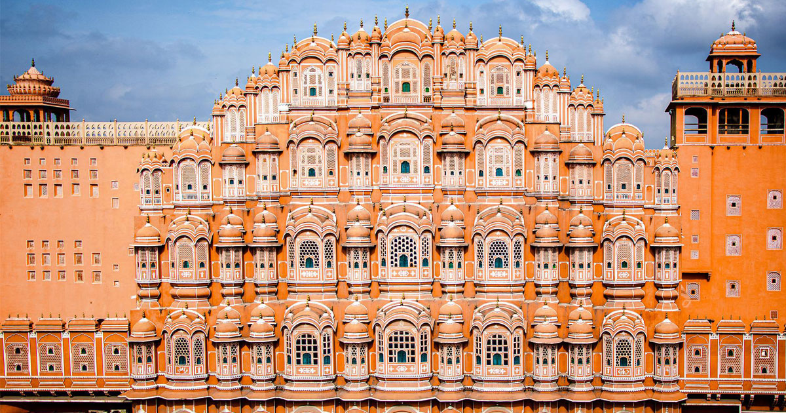
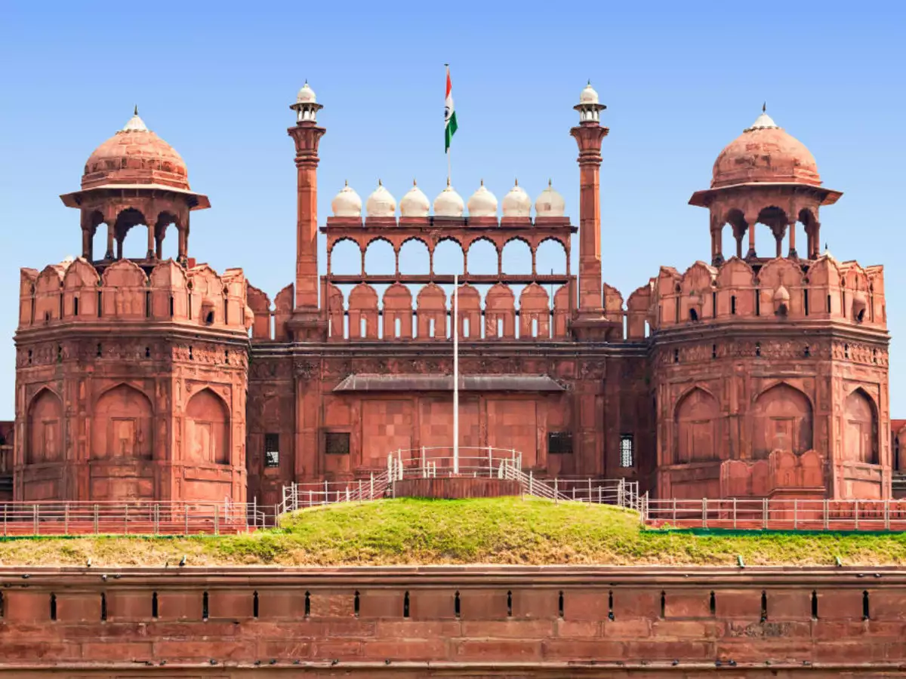

One of the most famous historical sites in India, the Taj Mahal of Agra dates back to the 17th century. It was built by Shah Jahan, the Mughal emperor, in the memory of Mumtaz Mahal, his third wife. It is also the abode of the tomb of Shah Jahan himself.

The top 10 historical places in India also include the world-famous Golden Temple, located in the city of Amritsar in Punjab. Also known as Sri Harmandir Sahib, the Golden temple is the most important religious site for the Sikhs, and celebrates humanity, tranquillity and brotherhood. Spread across two storeys, the gurdwara has a unique domed arch

Ranking amongst the top 10 historical places in India, Kolkata’s Victoria Memorial was constructed in honour of Queen Victoria, making it one of the relics of the British Raj. Built entirely out of white marble, the Victoria Memorial is almost a replica of its namesake in London. Surrounded by a well-manicured garden on all sides, it is h
Hawa Mahal in Jaipur is one of the best historical places in India, in addition to being a prominent landmark of Rajasthan. Dating back to the 18th century, Hawa Mahal is a 5-storey structure that overlooks the bustling streets of Jaipur. It has also been made in a blend of the Rajput, Mughal and Islamic styles of architecture. Built by Maharaja Sawai Pratap Singh, the Hawa Mahal has been constructed in a way such that the small windows here allow winds to enter the palace and keep it cool during the
When it comes to the famous historical places in India, one cannot miss the Red Fort in Delhi. Also popularly known as the Lal Qila, the Red Fort was constructed during Shah Jahan’s reign in the 17th century.

Delhi’s Qutub Minar ranks amongst the top 10 historical places in India. A UNESCO World Heritage Site, the Qutub Minar, also known as the Victory Tower, is the tallest brick minaret in the whole world, standing tall at a height of 72.5 metres. Built of marble and red sandstone, you can also see many beautiful carvings and intricate designs of the Qutub Minar.

India Gate possibly ranks at the top. An iconic landmark of Delhi, this sandstone-granite arch gate is amongst the largest war memorials in all of India, and is surrounded by verdant lawns and gardens. Also known as the All-India War Memorial, t

One of the oldest historical places in India is the Agra Fort, located in Uttar Pradesh. A true example of the stunning Mughal form of architecture, the 16th century Agra Fort was built during Akbar’s reign and has been recognized as a UNESCO World Heritage Site as well. The structure of the fort also has other different styles of architecture, along with int